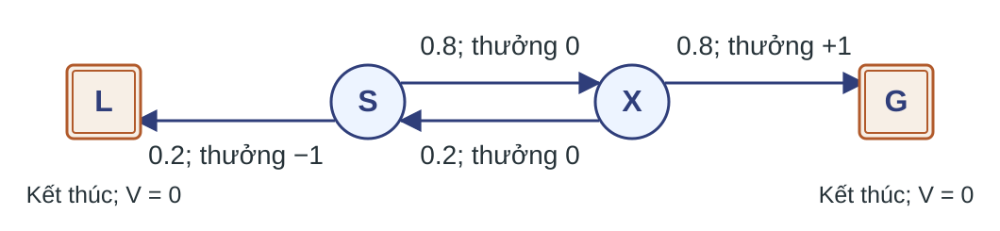
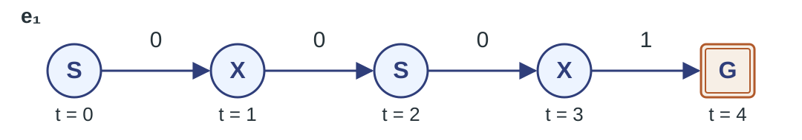
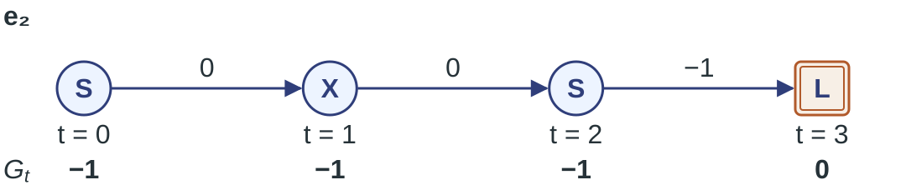
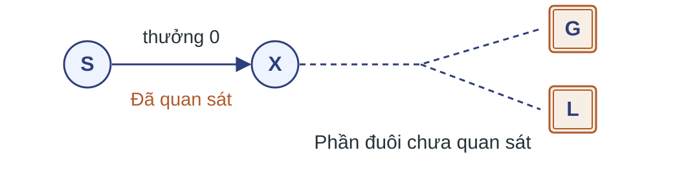
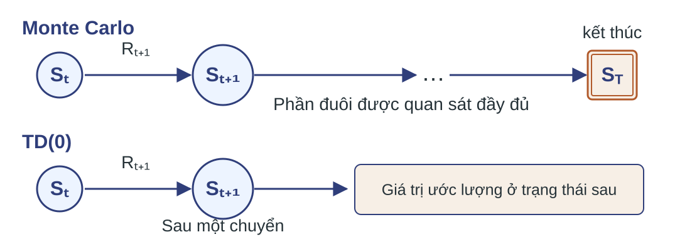
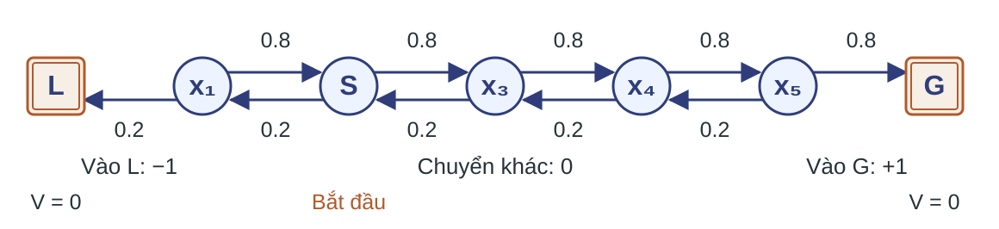
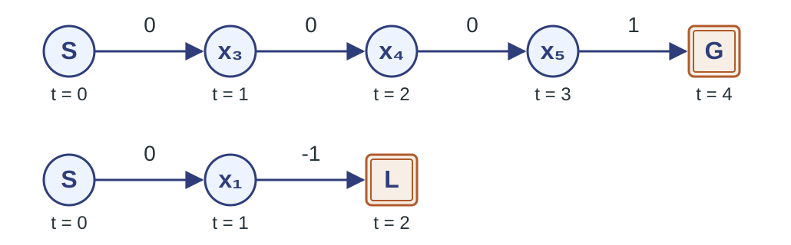
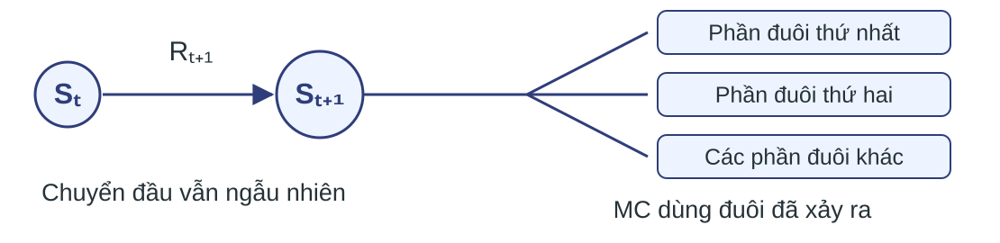
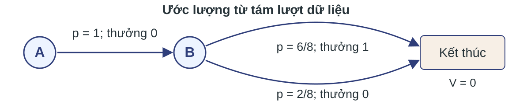

Dự đoán phi mô hình
Bài 05 · Học tăng cường
Học kỳ 1 · Năm học 2026–2027
Đánh giá một chính sách cố định từ dữ liệu tương tác.
Monte Carlo (MC) và sai phân thời gian (TD)
Bài toán dự đoán giữ nguyên chính sách sinh dữ liệu và ước lượng giá trị của chính sách ấy. Monte Carlo dùng lợi tức của các lượt hoàn chỉnh. Sai phân thời gian dùng phần thưởng vừa quan sát và ước lượng tại trạng thái kế tiếp.
Nguồn: Bài giảng gốc, tr. 1; Sutton–Barto, Reinforcement Learning: An Introduction , ấn bản 2, Ch. 5–6. Thông tin học phần theo danh mục học kỳ 1, 2026–2027.
Nội dung và mục tiêu
Monte Carlo Tính lợi tức, chọn mẫu theo lần ghé và cập nhật sau mỗi lượt.
Sai phân thời gian TD(0) Lập mục tiêu một bước và cập nhật sau mỗi chuyển.
So sánh hai phương pháp Độ chệch, phương sai, điều kiện hội tụ và dữ liệu cố định.
Tiên quyết: chính sách, giá trị trạng thái, kỳ vọng và Bellman kỳ vọng.
Đối tượng chung là kỳ vọng lợi tức dưới chính sách đã cho. Monte Carlo dùng các lượt hoàn chỉnh để lấy mẫu lợi tức. TD(0) dùng một chuyển và bảng giá trị hiện tại để tạo mục tiêu. Phần so sánh xét kỳ vọng và phương sai của hai mục tiêu, điều kiện hội tụ khi nhận mẫu mới và nghiệm khi dùng lại một tập dữ liệu cố định.
Nguồn: Bài giảng gốc, tr. 2, 15; Sutton–Barto, Reinforcement Learning: An Introduction , ấn bản 2, Ch. 5 tr. 91; Ch. 6 tr. 119.
Đánh giá chính sách khi chưa biết mô hình
Bài toán dự đoán: cho chính sách $\pi$ cố định, ước lượng $v_\pi(s)$ tại mọi trạng thái.
Đầu vào của quy hoạch động Phân phối chuyển trạng thái. Phần thưởng kỳ vọng. Kỳ vọng được tính từ mô hình. Đầu vào của dự đoán phi mô hình Các trạng thái và hành động đã xảy ra. Phần thưởng thực nhận. Kỳ vọng được ước lượng từ mẫu. Đầu ra cần tìm là bảng giá trị trạng thái của chính sách đang xét.
Môi trường có thể cung cấp tương tác trực tiếp hoặc mẫu từ bộ mô phỏng. Thuật toán phi mô hình không cần nhận mô hình chuyển và phần thưởng kỳ vọng làm đầu vào. Mô hình được cho trong một bài tập vẫn có thể dùng riêng để tính giá trị chuẩn, sau đó đối chiếu ước lượng học từ mẫu. Chính sách không được cải thiện trong bài toán dự đoán này.
Nguồn: Bài giảng gốc, tr. 6, 15–16; Sutton–Barto, Reinforcement Learning: An Introduction , ấn bản 2, Ch. 5 tr. 91.
Mẫu chuyển và giá trị cần ước lượng
Mỗi bước tương tác theo $\pi$ cho một mẫu chuyển:
$(S_t,A_t,R_{t+1},S_{t+1}),\qquad A_t\sim\pi(\cdot\mid S_t)$
Giả thiết về dữ liệu $\pi$ Markov, cố định; môi trường Markov dừng.
Trạng thái được quan sát đầy đủ; $\mathcal S$ hữu hạn.
Đại lượng cần học $G_t$: tổng phần thưởng chiết khấu từ sau $t$, gọi là lợi tức .
$v_\pi$: giá trị thật; $V$: bảng ước lượng.
$v_\pi(s)=\mathbb E_\pi[G_t\mid S_t=s]$
$S_t\in\mathcal S$, $A_t$ thuộc tập hành động hợp lệ tại $S_t$ và $R_{t+1}\in\mathbb R$. Phần thưởng của chuyển từ thời điểm $t$ đến $t+1$ mang chỉ số $t+1$. Kỳ vọng lấy theo chính sách $\pi$ và động lực môi trường, có điều kiện trạng thái hiện tại bằng $s$. Trong phạm vi này, trạng thái chứa đủ thông tin Markov; một quan sát bất kỳ chưa chắc thỏa điều kiện ấy. Một mẫu chỉ cho phần thưởng tức thời; giá trị là kỳ vọng của toàn bộ phần thưởng chiết khấu về sau. $G_t$, thời điểm kết thúc và quy ước ở trạng thái kết thúc được định nghĩa cùng ví dụ chuỗi ngắn.
Nguồn: Bài giảng gốc, tr. 3, 15–17; Sutton–Barto, Reinforcement Learning: An Introduction , ấn bản 2, §5.1 tr. 92; §6.1 tr. 119–120.
Kiểm tra mẫu chuyển và mô hình
Tác tử đi trên dãy ô; chính sách luôn chọn hành động sang phải, ký hiệu $a$. Một chuyển quan sát được:
$s\xrightarrow{\;a,\ \text{thưởng }0\;}s'$
Xác suất thực sự đi theo từng hướng chưa biết.
Câu hỏi:
Xác định bốn thành phần của mẫu quan sát. Nêu đại lượng cần ước lượng khi chính sách giữ cố định. Xác định thông tin còn thiếu để đánh giá bằng quy hoạch động. Mẫu quan sát là $(s,a,0,s')$ với $a$ là hành động sang phải. Đối tượng cần ước lượng là $v_\pi(s)$ tại các trạng thái quan tâm. Đánh giá bằng quy hoạch động cần mô hình chuyển và phần thưởng kỳ vọng; một chuyển chỉ cung cấp một kết quả đã xảy ra. Phân phối chung $p(s',r\mid s,a)$ cũng đủ để tính các kỳ vọng này, nhưng không cần biết toàn bộ phân phối phần thưởng nếu đã có kỳ vọng phù hợp. Thưởng bằng $0$ ở mẫu này không chứng minh mọi chuyển đều có thưởng bằng $0$, cũng không xác định kỳ vọng dài hạn.
Nguồn: Bài giảng gốc, tr. 15–16; Bài tập tuần 5, bài 2; dữ kiện chuỗi của bài giảng gốc.
Chuỗi ngắn và ý tưởng Monte Carlo

Chính sách luôn chọn sang phải; môi trường có thể đưa tác tử sang trái. $\mathcal S=\{S,X\}$, $\gamma=1$.
Lượt: dãy chuyển từ trạng thái đầu đến $L$ hoặc $G$.
Ý tưởng Monte Carlo: $v_\pi(s)$ là kỳ vọng của lợi tức, nên được ước lượng bằng trung bình các lợi tức quan sát sau những lần ghé $s$ trong các lượt hoàn chỉnh.
Từ mỗi trạng thái không kết thúc, xác suất sang phải là $0.8$ và sang trái là $0.2$. Phần thưởng nằm trên chuyển vào $L$ hoặc $G$; giá trị tiếp nối ở hai trạng thái kết thúc bằng $0$. Trong chuỗi hữu hạn này, lượt kết thúc hầu chắc chắn và có thời gian kết thúc kỳ vọng hữu hạn. Các xác suất xác định môi trường và phục vụ kiểm chứng; thuật toán Monte Carlo chỉ dùng các lượt được quan sát. Lợi tức của một lần ghé chỉ tính được khi lượt chứa lần ghé đó đã kết thúc. Ký hiệu $X$ chỉ ô dấu chấm trong hình nguồn.
Nguồn: Bài giảng gốc, tr. 17, 19–20; Bài tập tuần 5, bài 7; Sutton–Barto, Reinforcement Learning: An Introduction , ấn bản 2, §5.1 tr. 92.
Lợi tức sau mỗi lần ghé
Một lần ghé trạng thái $s$ là một thời điểm $t$ có $S_t=s$. Với $\gamma=1$, lợi tức của lần ghé ấy là tổng phần thưởng từ sau $t$ đến cuối lượt.


$X$ tại $t=1$ trong $e_1$: $0+0+1=1$; $S$ tại $t=2$ trong $e_2$: $-1$.
Ở lần ghé đầu của $e_1$, tổng thưởng còn lại là $0+0+0+1=1$. Phần đuôi sau $t=1$ gồm ba chuyển từ $X$ đến $G$, với tổng thưởng $0+0+1=1$. Mỗi lần ghé lặp lại là một thời điểm khác nên có lợi tức riêng; trong hai lượt này các lợi tức trùng giá trị. Mỗi phần đuôi bắt đầu ở $S$ hoặc $X$ trong $e_2$ có tổng bằng $-1$. Việc các lợi tức trong một lượt bằng nhau ở đây phụ thuộc $\gamma=1$ và cấu hình thưởng; nó không phải tính chất chung của mọi quỹ đạo. Lợi tức tại trạng thái kết thúc bằng $0$ vì sau đó không còn phần thưởng.
Nguồn: Bài giảng gốc, tr. 20, 22, 29; Bài tập tuần 5, bài 7.
Lợi tức chiết khấu
Lượt kết thúc tại $T$ với $G_T=0$ và $0\le\gamma\le1$. Thưởng đầu tiên sau $S_t$ là $R_{t+1}$.
$$G_t=\sum_{k=t}^{T-1}\gamma^{k-t}R_{k+1}=R_{t+1}+\gamma G_{t+1}.$$
$e_1$, tính ngược $t=4$ $t=3$ $t=2$ $t=1$ $t=0$ $R_{t+1}$ $1$ $0$ $0$ $0$ $G_t$ $0$ $1+\gamma\cdot0=1$ $0+\gamma\cdot1=\gamma$ $\gamma^2$ $\gamma^3$
Với $\gamma=1$: $G_0=G_1=G_2=G_3=1$, đúng các lợi tức của $e_1$ khi cộng trực tiếp.
Tách số hạng $k=t$ khỏi tổng rồi đặt $\gamma$ ra ngoài phần còn lại cho đẳng thức truy hồi. Bảng tính từ $t=T$ về $t=0$: $G_3=R_4+\gamma G_4=1$, $G_2=R_3+\gamma G_3=\gamma$, $G_1=\gamma^2$, $G_0=\gamma^3$; thuật toán Monte Carlo dùng đúng thứ tự này. Thưởng $R_4$ nhận trên chuyển thứ tư tính từ $S_0$, nên mang hệ số $\gamma^{4-1}=\gamma^3$. Tập $\mathcal S^+$ gồm $\mathcal S$ và các trạng thái kết thúc; giá trị tiếp nối ở trạng thái kết thúc bằng $0$, còn phần thưởng nhận trên chuyển vào trạng thái ấy vẫn được tính. Dừng thu thập do hết ngân sách không tự tạo một trạng thái kết thúc. Trong bài toán không kết thúc, việc đặt $\gamma=1$ không tự bảo đảm một tổng hữu hạn; trường hợp $\gamma=1$ cần lượt kết thúc hợp lệ và lợi tức khả tích.
Nguồn: Bài giảng gốc, tr. 17; Sutton–Barto, Reinforcement Learning: An Introduction , ấn bản 2, §5.1 tr. 92; §6.1 tr. 119–120.
Lần ghé đầu tiên và mọi lần ghé
Lần ghé đầu tiên: chỉ lấy $G_t$ tại thời điểm sớm nhất có $S_t=s$ trong lượt.Mọi lần ghé: lấy $G_t$ tại mọi thời điểm có $S_t=s$.Trạng thái Thời điểm ghé Lần ghé đầu tiên Mọi lần ghé $S$ $e_1$: $0,2$ · $e_2$: $0,2$ $(1,-1)$, trung bình $0$ $(1,1,-1,-1)$, trung bình $0$ $X$ $e_1$: $1,3$ · $e_2$: $1$ $(1,-1)$, trung bình $0$ $(1,1,-1)$, trung bình $1/3$
Tại $X$, mọi lần ghé lấy hai mẫu từ $e_1$ và một mẫu từ $e_2$, nên $e_1$ chiếm $2/3$ trọng số.
Theo tính Markov, phần lượt sau mỗi lần ghé $s$ có cùng phân phối với một lượt bắt đầu tại $s$. Vì vậy mỗi mẫu của cả hai quy tắc có kỳ vọng $v_\pi(s)$.
Trong $e_1$, $S$ xuất hiện tại $t=0,2$ và $X$ tại $t=1,3$; trong $e_2$, $S$ tại $t=0,2$ và $X$ tại $t=1$. Gọi $t_1<t_2<\cdots$ là các thời điểm có $S_t=s$ trong một lượt. Quy tắc lần ghé đầu tiên chọn $G_{t_1}$, nên mỗi lượt cho tối đa một mẫu; quy tắc mọi lần ghé chọn mọi $G_{t_k}$. Lần ghé thứ $k$ xảy ra tại $t_k$ hay không chỉ phụ thuộc lịch sử đến $t_k$, nên $t_k$ là một thời điểm dừng. Với chính sách Markov cố định và môi trường Markov dừng, tính Markov mạnh cho thấy phần lượt từ $t_k$ có cùng phân phối với một lượt bắt đầu tại $s$, do đó $\mathbb E_\pi[G_{t_k}\mid\text{lần ghé thứ }k\text{ xảy ra}]=v_\pi(s)$ với mọi $k$, không riêng $k=1$.
Từng mẫu có kỳ vọng $v_\pi(s)$. Các mẫu trong cùng lượt dùng chung phần đuôi; hai mẫu $1,1$ của $X$ trong $e_1$ cùng đến từ một kết cục là về $G$. Sự phụ thuộc trong lượt không tự gây chệch; số mẫu mỗi lượt ngẫu nhiên và tương quan với lợi tức làm trung bình mọi lần ghé có dạng tỉ số, nên không được khẳng định không chệch ở số lượt hữu hạn. Điều kiện cho các kết quả về trung bình nằm ở trang "Tính không chệch và hội tụ của Monte Carlo". Tại $S$, mỗi lượt cho hai mẫu bằng nhau, nên hai quy tắc cùng trung bình $0$. Tại $X$, $e_1$ cho hai mẫu và $e_2$ cho một mẫu, nên trung bình mọi lần ghé đặt trọng số $2/3$ cho kết cục của $e_1$.
Nguồn: Bài giảng gốc, tr. 18, 20, 22; Sutton–Barto, Reinforcement Learning: An Introduction , ấn bản 2, §5.1 tr. 92–93.
Ước lượng Monte Carlo
$g_i(s)$: mẫu lợi tức thứ $i$ được chọn tại $s$; $n=N(s)$: số mẫu đã chọn tại $s$.
$$V_n(s)=\frac1n\sum_{i=1}^{n}g_i(s).$$
Tại $X$, theo mọi lần ghé:
$g_n(X)$ $n$ Tổng $V_n(X)$ $1$ $1$ $1$ $1$ $1$ $2$ $2$ $1$ $-1$ $3$ $1$ $1/3$
$v_\pi(s)$ là kỳ vọng cần ước lượng; $V_n(s)$ là trung bình của $n$ mẫu đã chọn.
Monte Carlo dùng các lợi tức đã quan sát dưới chính sách cố định để ước lượng giá trị. Với trung bình mẫu, mỗi lợi tức được chọn có trọng số bằng $1/n$. Chỉ số $i$ đánh thứ tự các mẫu của một trạng thái, không phải thời điểm tương tác toàn cục. Bảng xử lý ba mẫu của $X$ theo thứ tự xuất hiện: hai mẫu từ $e_1$, rồi một mẫu từ $e_2$. Bài giảng gốc lưu bộ đếm $N(s)$ và tổng lợi tức, ký hiệu $S(s)$ trong nguồn; ở đây gọi là tổng các mẫu để tránh trùng với trạng thái $S$. Hai cột giữa của bảng là hai đại lượng ấy. Khi trạng thái chưa có mẫu, bảng giá trị vẫn chứa giá trị khởi tạo.
Nguồn: Bài giảng gốc, tr. 18; Sutton–Barto, Reinforcement Learning: An Introduction , ấn bản 2, §5.1 tr. 92–93.
Cập nhật trung bình khi có mẫu mới
Yêu cầu: tính trung bình mới chỉ từ trung bình cũ, số mẫu và mẫu mới. Tại $X$ đã có $2$ mẫu với trung bình $1$; mẫu mới $g_3(X)=-1$.
Tính lại từ tổng $\dfrac{2\cdot1+(-1)}{3}=\dfrac13$
Sửa trung bình cũ $1+\dfrac13\bigl(-1-1\bigr)=\dfrac13$
Trung bình dịch về phía mẫu mới Trục số từ âm 1 đến 1. Mẫu mới âm 1 vẽ bằng hình vuông, trung bình cũ 1 vẽ bằng hình tròn rỗng, trung bình mới 1/3 vẽ bằng hình tròn đặc. Mũi tên từ 1 đến 1/3 dài bằng một phần ba đoạn nét đứt từ âm 1 đến 1, đoạn có độ dài 2. mẫu mới trung bình mới trung bình cũ −1 0 1/3 1 khoảng cách 2; mũi tên dài 2/3 Trung bình thay đổi bằng một phần ba của sai lệch giữa mẫu mới và trung bình cũ.
Tổng của hai mẫu cũ bằng số mẫu nhân trung bình, tức $2\cdot1$. Sau khi thêm $-1$, tổng mới bằng $1$ và số mẫu bằng $3$. Hai cách tính cho cùng kết quả và cùng chỉ cần số mẫu, trung bình cũ và mẫu mới, không cần các lợi tức cũ; lưu bộ đếm và tổng như bài giảng gốc cũng không cần lịch sử. Dạng sửa trung bình có thêm một cấu trúc: ước lượng mới bằng ước lượng cũ cộng một bước nhân với sai lệch giữa mục tiêu và ước lượng cũ. Thay bước $1/n$ bằng một hằng số cho quy tắc bước học hằng; thay lợi tức bằng mục tiêu một bước cho TD(0). Trên trục số, khoảng cách từ trung bình cũ $1$ đến mẫu mới $-1$ bằng $2$, và trung bình mới dịch $2/3$ về phía mẫu mới. Quy trình Monte Carlo còn cần dữ liệu của lượt hiện tại để tính lợi tức trước khi chọn mẫu.
Nguồn: Sutton–Barto, Reinforcement Learning: An Introduction , ấn bản 2, §2.4 tr. 30–31; Bài giảng gốc, tr. 18; phép tính từ hai lượt trong bài giảng gốc.
Trung bình gia tăng
Tách mẫu thứ $n$ khỏi tổng của $n-1$ mẫu đã có:
$$V_n(s)=\frac{(n-1)V_{n-1}(s)+g_n(s)}n.$$
$$V_n(s)=V_{n-1}(s)+\frac1n\bigl[g_n(s)-V_{n-1}(s)\bigr].$$
Lợi tức mới $g_n(s)$ là mục tiêu cập nhật ; mọi cập nhật trong bài có dạng $V\leftarrow V+\alpha[\text{mục tiêu}-V]$.
Khởi tạo $N(s)=0$. Khi nhận mẫu hợp lệ, tăng $N(s)$ rồi dùng bước học $1/N(s)$.
Bước học nghịch đảo số mẫu tái tạo chính xác trung bình số học.
Đẳng thức thứ hai thu được bằng cách viết $(n-1)/n=1-1/n$. Số đếm thuộc riêng trạng thái $s$, nên thay $1/n$ bằng nghịch đảo thời điểm toàn cục thường không còn cho trung bình mẫu tại $s$. Khi $n=1$, hệ số của giá trị khởi tạo bằng $0$ và ước lượng bằng mẫu đầu tiên, bất kể giá trị khởi tạo.
Nguồn: Bài giảng gốc, tr. 21; Sutton–Barto, Reinforcement Learning: An Introduction , ấn bản 2, §2.4 tr. 30–31.
Bước học hằng
Thay $1/n$ bằng hằng số $\alpha$. Quy tắc này thường dùng cho môi trường không dừng, nằm ngoài giả thiết của bài; ở đây $\alpha=0.5$ cho thấy cách đặt trọng số theo thời gian.
Cùng mẫu $(1,-1)$ và cùng giá trị khởi tạo $0$:
Sau mẫu Trung bình mẫu Bước học hằng $\alpha=0.5$ $+1$ $1$ $0+0.5(1-0)=0.5$ $-1$ $0$ $0.5+0.5(-1-0.5)=-0.25$
$$V_n=(1-\alpha)V_{n-1}+\alpha g_n,\qquad 0<\alpha\le1.$$
Với $0<\alpha<1$, khởi tạo còn ảnh hưởng; mẫu gần đây có trọng số lớn hơn.
Khai triển lặp cho $V_n=(1-\alpha)^nV_0+\sum_{i=1}^{n}\alpha(1-\alpha)^{n-i}g_i$. Với $0<\alpha<1$, trọng số của một mẫu giảm theo khoảng cách đến lần cập nhật hiện tại. Với $\alpha=1$, $V_n=g_n$ từ lần cập nhật đầu tiên, nên ảnh hưởng khởi tạo bằng $0$. Đây là quy tắc trọng số khác trung bình số học. Trên mẫu ngẫu nhiên mới, bước học hằng có thể duy trì dao động quanh giá trị cần dự đoán; nó không tự bảo đảm hội tụ đúng. Kết quả $0.5$ sau lượt đầu trong nguồn tương ứng khởi tạo $0$ và bước học $0.5$ khi chỉ dùng một mẫu mỗi trạng thái. Bài giảng gốc nêu bước học hằng cho bài toán không dừng; bài này giữ giả thiết môi trường dừng và dùng $\alpha=0.5$ để đối chiếu ví dụ của bài giảng gốc.
Nguồn: Bài giảng gốc, tr. 20–23, bước học hằng cho bài toán không dừng ở tr. 21; Sutton–Barto, Reinforcement Learning: An Introduction , ấn bản 2, §2.5 tr. 32–33.
Hai lựa chọn của Monte Carlo
Chỉ dùng $e_1:S\to X\to S\to X\to G$; khởi tạo $V=0$, $\gamma=1$.
Quy tắc chọn mẫu Trung bình mẫu Bước hằng $\alpha=0.5$ Lần ghé đầu tiên $(V(S),V(X))=(1,1)$ $(0.5,0.5)$ Mọi lần ghé $(V(S),V(X))=(1,1)$ $(0.75,0.75)$
Một cấu hình MC cần nêu cả quy tắc chọn lần ghé và quy tắc bước học.
Với bước hằng, hai mẫu $+1$ tạo chuỗi cập nhật $0\to0.5\to0.75$.
Các quy tắc lần ghé xác định tập mẫu. Các quy tắc bước học xác định cách kết hợp tập mẫu ấy. Vì vậy MC gia tăng có thể dùng lần ghé đầu tiên hoặc mọi lần ghé. Trong lượt đang xét, mọi lợi tức bằng $1$ nên các trung bình đều bằng $1$; kết quả với bước hằng vẫn khác vì số lần cập nhật khác nhau.
Nguồn: Sutton–Barto, Reinforcement Learning: An Introduction , ấn bản 2, §5.1 tr. 92–93; §6.1 tr. 119; Bài tập tuần 5, bài 5 được hiệu chỉnh.
Thuật toán dự đoán Monte Carlo
Đầu vào: $\pi,\gamma$, số lượt $M$, quy tắc lần ghé và $\alpha_n(s)$. Đầu ra: $V$.
Khởi tạo $V$ tùy ý, $N(s)=0$; giá trị ở trạng thái kết thúc bằng $0$.
Lặp $M$ lượt: thu $S_0,A_0,R_1,\ldots,S_T$ theo $\pi$ đến khi kết thúc.
Đặt $G_T=0$; với $t=T-1,\ldots,0$: $G_t=R_{t+1}+\gamma G_{t+1}$.
Đặt tập đã ghé $H=\varnothing$; duyệt xuôi $t=0,\ldots,T-1$, đặt $s=S_t$.
Nếu dùng mọi lần ghé, hoặc $s\notin H$ khi dùng lần ghé đầu tiên:
Tiếp tục lượt tiếp theo; trả về $V$ sau đủ $M$ lượt.
Lượt sinh bởi chính sách cố định cung cấp toàn bộ phần thưởng cần để tính các lợi tức. Duyệt lùi chỉ phục vụ tính $G_t$; chọn lần ghé và cập nhật diễn ra theo chiều xuôi. Nếu duyệt lùi đồng thời loại các trạng thái đã gặp, thuật toán sẽ chọn lần ghé cuối theo thời gian. Với trung bình mẫu, đặt $\alpha_{N(s)}(s)=1/N(s)$; với bước hằng, đặt cùng một $\alpha$ cho các lần cập nhật. Trạng thái kết thúc không được cập nhật. $M$ là ngân sách toàn bộ việc học, còn $T$ là thời điểm một lượt thực sự kết thúc.
Nguồn: Sutton–Barto, Reinforcement Learning: An Introduction , ấn bản 2, §5.1 tr. 92; §2.4 tr. 30–31; quy trình hai lượt duyệt để chọn đúng mẫu theo thời gian.
Monte Carlo trên lượt thứ hai
Tiếp tục sau $e_1$ với $\alpha=0.5$, $\gamma=1$; $e_2:S\to X\to S\to L$.
Mỗi lợi tức được chọn trong $e_2$ đều bằng $-1$.
Quy tắc Tại $S$ Tại $X$ Lần ghé đầu tiên $0.5\to-0.25$ $0.5\to-0.25$ Mọi lần ghé $0.75\to-0.125\to-0.5625$ $0.75\to-0.125$
$0.75+0.5(-1-0.75)=-0.125$
Mỗi cấu hình được chạy riêng từ bảng $0$ qua đúng hai lượt.
Với lần ghé đầu tiên, một cập nhật từ $0.5$ và mục tiêu $-1$ cho $0.5+0.5(-1-0.5)=-0.25$. Với mọi lần ghé, $S$ nhận hai cập nhật: lần đầu cho $-0.125$, lần sau cho $-0.125+0.5(-1+0.125)=-0.5625$. $X$ chỉ xuất hiện một lần trong $e_2$ nên dừng ở $-0.125$. Hai cấu hình có các bảng đầu lượt khác nhau do đã xử lý $e_1$ theo những tập mẫu khác nhau.
Nguồn: Bài giảng gốc, tr. 22, 29; Bài tập tuần 5, bài 7.
Tính không chệch và hội tụ của Monte Carlo
Theo tính Markov, lợi tức sau mỗi lần ghé $s$ có kỳ vọng $v_\pi(s)$. Ước lượng không chệch : kỳ vọng bằng $v_\pi(s)$.
Lần ghé đầu tiên Lượt độc lập cho mẫu độc lập, cùng phân phối.
Trung bình không chệch, hội tụ theo luật số lớn.
Mọi lần ghé Mẫu trong cùng lượt có thể phụ thuộc nhau.
Trung bình vẫn hội tụ khi số lượt tăng vô hạn.
Bước học hằng Mẫu mới nhất có trọng số $\alpha$; mẫu cũ hơn giảm theo $(1-\alpha)$.
Ước lượng dao động khi lợi tức ngẫu nhiên.
Hai kết quả hội tụ về $v_\pi(s)$ dùng bước học $1/N(s)$ và giả sử quá trình hữu hạn, các lượt độc lập, cùng phân phối, kết thúc hầu chắc chắn, thưởng bị chặn và $s$ được ghé với xác suất dương.
Theo tính Markov, lợi tức sau mọi lần ghé $s$ có kỳ vọng $v_\pi(s)$, kể cả khi thời điểm ghé là ngẫu nhiên, như lần ghé thứ hai trong một lượt. Trung bình của một số mẫu cố định có cùng kỳ vọng ấy. Đối với lần ghé đầu tiên, các lượt độc lập cho các mẫu độc lập, cùng phân phối. Trong khung này, khi $n\to\infty$, trung bình mẫu hội tụ về $v_\pi(s)$. Giả thiết phương sai hữu hạn là điều kiện đủ được chọn ở đây, không phải điều kiện cần của mọi dạng luật số lớn. Với mọi lần ghé, các mẫu trong cùng lượt có thể phụ thuộc, và trung bình hữu hạn mẫu không được tuyên bố luôn không chệch. Với bước học hằng $0<\alpha<1$, mẫu mới nhất luôn nhận trọng số $\alpha$ và mẫu cách $j$ lần cập nhật nhận $\alpha(1-\alpha)^j$, nên nhiễu của mẫu mới không bị triệt tiêu dần.
Trong quá trình phần thưởng Markov hữu hạn do chính sách Markov dừng, cố định tạo ra, giả sử phần thưởng bị chặn, quá trình kết thúc hầu chắc chắn từ mọi trạng thái không kết thúc đang xét, các lượt được khởi động độc lập theo cùng phân phối và trạng thái $s$ được ghé với xác suất dương. Với $0\le\gamma\le1$ và bước học $1/N(s)$, trung bình mọi lần ghé hội tụ hầu chắc chắn về $v_\pi(s)$ khi số lượt hoàn chỉnh tiến vô hạn. Luật số lớn được áp dụng theo lượt cho tổng lợi tức và số lần ghé, rồi lấy tỷ số. Kết quả không yêu cầu các mẫu trong cùng lượt độc lập, không bảo đảm không chệch ở số lượt hữu hạn và không áp dụng nguyên văn cho bước học hằng.
Nguồn: Sutton–Barto, Reinforcement Learning: An Introduction , ấn bản 2, §5.1 tr. 92–93; §2.5 tr. 32–33; hiệu chỉnh phát biểu ở bài giảng gốc tr. 23.
Kiểm tra chọn mẫu Monte Carlo
$e_1:S\to X\to S\to X\to G$, thưởng $(0,0,0,1)$.
$e_2:S\to X\to S\to L$, thưởng $(0,0,-1)$.
$\gamma=1$; bảng ban đầu bằng $0$.
Câu hỏi: Tại $X$, lập dãy lợi tức theo lần ghé đầu tiên và mọi lần ghé; tính hai trung bình. Dùng lần ghé đầu tiên với $\alpha=0.5$: tính $V(X)$ sau mỗi lượt và giải thích sự khác biệt. $X$ xuất hiện tại hai vị trí trong $e_1$ và một vị trí trong $e_2$. Lần ghé đầu tiên chọn $(1,-1)$ nên trung bình bằng $0$; mọi lần ghé chọn $(1,1,-1)$ nên trung bình bằng $1/3$. Với lần ghé đầu tiên và bước học $0.5$, ước lượng lần lượt là $0+0.5(1-0)=0.5$ và $0.5+0.5(-1-0.5)=-0.25$. Khác biệt sau hai lượt đến từ trọng số của mẫu và khởi tạo; tập mẫu trong phép tính cuối vẫn là $(1,-1)$.
Nguồn: Bài giảng gốc, tr. 20, 22; Bài tập tuần 5, bài 5 và 7 được hiệu chỉnh.
Cập nhật khi lượt chưa kết thúc

Đã có Trạng thái $S$, hành động, thưởng $0$ và trạng thái sau $X$.
Chưa có Kết quả cuối lượt và lợi tức $G_0$.
Cập nhật ngay sau chuyển cần một ước lượng cho phần lợi tức còn lại.
Tiền tố $S\to X$ có thể thuộc một lượt kết thúc tại $G$ hoặc tại $L$. Monte Carlo đầy đủ chưa thể tính lợi tức nếu phần đuôi chưa được quan sát. Bảng hiện tại đã chứa một dự đoán cho phần còn lại bắt đầu ở $X$. Dùng dự đoán ấy cho phép tạo mục tiêu sớm hơn thời điểm kết thúc; chất lượng mục tiêu phụ thuộc vào ước lượng đang có.
Nguồn: Bài giảng gốc, tr. 24; Sutton–Barto, Reinforcement Learning: An Introduction , ấn bản 2, §6.1 tr. 119–120.
Mục tiêu một bước

$G_t=R_{t+1}+\gamma G_{t+1},\qquad v_\pi(S_{t+1})=\mathbb E_\pi[G_{t+1}\mid S_{t+1}]$
$R_{t+1}$ có ngay sau một chuyển; $G_{t+1}$ được thay bằng $V(S_{t+1})$, ước lượng của $v_\pi(S_{t+1})$.
Mục tiêu một bước $R_{t+1}+\gamma V(S_{t+1})$ thay mục tiêu $G_t$ của Monte Carlo. Dùng một ước lượng để cập nhật ước lượng khác gọi là bootstrap .
Trong đẳng thức lợi tức, $R_{t+1}$ được biết sau một chuyển còn $G_{t+1}$ cần phần đuôi của lượt. Sai phân thời gian thay phần chưa biết bằng giá trị đang lưu trong bảng tại trạng thái sau. Giá trị ấy là một dự đoán về lợi tức, khác với phần thưởng đã quan sát trực tiếp. Chất lượng mục tiêu phụ thuộc vào bảng đang có.
Nguồn: Bài giảng gốc, tr. 24–25; Sutton–Barto, Reinforcement Learning: An Introduction , ấn bản 2, §6.1 tr. 120–121.
Một bước cập nhật TD
Bảng cho trước: $V(S)=0$, $V(X)=0.5$; $\gamma=1$, $\alpha=0.5$.
$S\xrightarrow{\,\text{thưởng }0\,}X$
Mục tiêu $0+1\cdot0.5=0.5$
Thưởng và giá trị sau.
Sai số $0.5-0=0.5$
Mục tiêu trừ giá trị cũ.
Giá trị mới tại S $0+0.5\cdot0.5=0.25$
Điều chỉnh theo sai số.
$V(X)$ giữ nguyên $0.5$. Bảng $V(S)=0$, $V(X)=0.5$ là kết quả TD(0) sau $e_1$,
Các giá trị $0$ và $0.5$ là dữ kiện đầu vào của phép tính. Mục tiêu gồm thưởng $0$ và ước lượng phần còn lại $0.5$. Khoảng cách từ giá trị cũ tại $S$ tới mục tiêu bằng $0.5$; bước học $0.5$ lấy một nửa khoảng cách ấy. Chỉ phần tử ứng với trạng thái hiện tại $S$ thay đổi. Bảng cho trước này cũng là kết quả sau lượt TD đầu tiên từ khởi tạo $0$, được tính đầy đủ bằng cùng quy tắc.
Nguồn: Sutton–Barto, Reinforcement Learning: An Introduction , ấn bản 2, §6.1 tr. 119–120; phép tính trên chuỗi của bài giảng gốc.
Mục tiêu và sai số TD(0)
$V_t$ là toàn bộ bảng trước cập nhật; $n$ đếm lần cập nhật của $S_t$.
$$\begin{aligned}
Y_t&=R_{t+1}+\gamma V_t(S_{t+1}),\\
\delta_t&=Y_t-V_t(S_t),\\
V_{t+1}(S_t)&=V_t(S_t)+\alpha_n(S_t)\delta_t.
\end{aligned}$$
Chỉ $V(S_t)$ được cập nhật; các phần tử khác giữ nguyên.
$\delta_t$ là hiệu giữa mục tiêu dựa trên dự đoán tại $t+1$ và dự đoán tại $t$;
Cả giá trị hiện tại và giá trị trạng thái sau ở vế phải được đọc từ cùng bảng $V_t$. Khi mục tiêu lớn hơn giá trị cũ, $\delta_t$ dương và cập nhật làm giá trị tăng; khi mục tiêu thấp hơn, dấu đổi lại. Nói chung, $\delta_t$ khác sai số thật $v_\pi(S_t)-V_t(S_t)$ vì mục tiêu dùng một chuyển ngẫu nhiên và một bảng ước lượng. Nếu đặt lại chỉ số thời gian ở lượt mới, bảng ước lượng vẫn được giữ từ các lượt trước.
Nguồn: Bài giảng gốc, tr. 25; Sutton–Barto, Reinforcement Learning: An Introduction , ấn bản 2, §6.1 tr. 119–121.
Thuật toán TD(0)
Đầu vào: $\pi,\gamma,\alpha_n(s)$ và ngân sách $B$ chuyển. Đầu ra: $V$.
Khởi tạo $V$, $N(s)=0$; giá trị ở trạng thái kết thúc bằng $0$.
Bắt đầu một lượt ở trạng thái $S_0$ không kết thúc.
Khi còn ngân sách: chọn $A_t\sim\pi(\cdot\mid S_t)$.
Quan sát $R_{t+1},S_{t+1}$; tăng $N(S_t)$ và đặt $n=N(S_t)$.
Đọc cùng bảng hiện tại $V_t$:
Ghi $V(S_t)\leftarrow V_t(S_t)+\alpha_n(S_t)\delta_t$.
Giảm ngân sách một chuyển; nhận $S_{t+1}$ làm trạng thái hiện tại.
Nếu đã kết thúc và còn ngân sách, bắt đầu lượt mới; hết ngân sách thì trả $V$.
Ở đầu lượt, trạng thái ban đầu lấy từ cơ chế khởi tạo của bài toán. Mẫu tại mỗi bước được sinh bởi chính sách cố định đang đánh giá. Cả hai phép đọc trên vế phải diễn ra trước phép ghi, kể cả khi trạng thái sau trùng trạng thái hiện tại. Trạng thái kết thúc có giá trị $0$ và không phát sinh hành động tiếp theo trong lượt. Kết thúc một lượt cho phép bắt đầu lượt mới; hết ngân sách dừng toàn bộ thuật toán. Nếu ngân sách hết giữa lượt, trạng thái hiện tại không được đổi thành trạng thái kết thúc.
Nguồn: Bài giảng gốc, tr. 25; Sutton–Barto, Reinforcement Learning: An Introduction , ấn bản 2, §6.1 tr. 120, quy trình TD(0).
Trạng thái kết thúc và tự chuyển
Hai trường hợp biên của quy tắc đọc bảng là chuyển vào trạng thái kết thúc và tự chuyển, xảy ra khi tác tử đứng yên.
Chuyển vào trạng thái kết thúc $X\xrightarrow{\,+1\,}G$
$V_t(G)=0$.
Mục tiêu $Y_t=1+\gamma\cdot0=1$.
Tự chuyển $s\to s$, thưởng $0$; $\gamma=0.9$.
$V_t(s)=2$, $\alpha=0.5$.
$Y_t=1.8$, $\delta_t=-0.2$.
$V_{t+1}(s)=2+0.5(-0.2)=1.9$.
Cả hai lần đọc trong tự chuyển dùng cùng giá trị trước cập nhật.
Phần thưởng $+1$ nằm trên chuyển vào $G$; nó không phải giá trị tương lai của $G$. Ở tự chuyển, mục tiêu bằng $0+0.9\cdot2=1.8$ và sai số bằng $1.8-2=-0.2$. Phép tính tự chuyển kiểm việc đọc bảng cũ, không mô tả một chuyển có thể xảy ra trong chuỗi ngắn. Chuyển đứng yên xuất hiện trong chuỗi năm ô của Bài tập tuần 5, bài 6; các số trong thẻ tự chuyển là số liệu minh họa. Việc thu thập bị ngắt theo thời gian không tương đương kết thúc thật và không cho phép tự đặt giá trị tiếp nối bằng $0$.
Nguồn: Sutton–Barto, Reinforcement Learning: An Introduction , ấn bản 2, §6.1 tr. 120; trạng thái kết thúc từ bài giảng gốc tr. 19; tự chuyển là phép kiểm quy tắc, phù hợp dạng chuyển ở Bài tập tuần 5, bài 6.
TD(0) trên lượt thứ nhất
$e_1:S\to X\to S\to X\to G$; $V(S)=V(X)=0$, $\alpha=0.5$, $\gamma=1$.
$t$ Chuyển Thưởng Mục tiêu $V(S)$ sau bước $V(X)$ sau bước 0 $S\to X$ 0 0 0 0 1 $X\to S$ 0 0 0 0 2 $S\to X$ 0 0 0 0 3 $X\to G$ 1 1 0 0.5
Trong lượt đầu từ bảng $0$, thưởng cuối trực tiếp cập nhật $X$ ngay trước $G$.
Ba chuyển đầu có thưởng bằng $0$ và giá trị tại trạng thái sau bằng $0$, nên mục tiêu và cập nhật đều bằng $0$. Chuyển cuối có mục tiêu $1+1\cdot0=1$; do đó $V(X)=0+0.5(1-0)=0.5$. Bảng cuối là $(0,0.5)$, trùng dữ kiện đã dùng trong phép tính một bước. Quy trình trực tuyến không quay lại các chuyển trước để sửa $S$ sau khi $X$ vừa thay đổi; làm vậy sẽ là tái sử dụng dữ liệu.
Nguồn: Bài giảng gốc, tr. 29; Bài tập tuần 5, bài 7.
TD(0) trên lượt thứ hai
$e_2:S\to X\to S\to L$; bắt đầu từ $(V(S),V(X))=(0,0.5)$.
Giữ $\alpha=0.5$, $\gamma=1$.
Chuyển Thưởng Mục tiêu $V(S)$ sau bước $V(X)$ sau bước $S\to X$ 0 0.5 0.25 0.5 $X\to S$ 0 0.25 0.25 0.375 $S\to L$ −1 −1 −0.375 0.375
$0.25+0.5(-1-0.25)=-0.375$
Chuyển $X\to S$ dùng giá trị $V(S)=0.25$ vừa được cập nhật.
Bước đầu cho $V(S)=0+0.5(0.5-0)=0.25$. Bước thứ hai đọc bảng sau bước đầu, nên $V(X)=0.5+0.5(0.25-0.5)=0.375$. Bước cuối có giá trị tiếp nối tại $L$ bằng $0$, mục tiêu bằng $-1$ và giá trị mới tại $S$ bằng $-0.375$. Bảng được cập nhật tại chỗ giữa các chuyển. Trong từng chuyển, mọi giá trị ở vế phải vẫn được đọc trước phép ghi.
Nguồn: Bài giảng gốc, tr. 29; Bài tập tuần 5, bài 7.
Chi phí bộ nhớ và tính toán
Quy trình dạng bảng Monte Carlo gia tăng TD(0) Thời điểm có mục tiêu Sau khi lượt kết thúc Sau một chuyển Dữ liệu tạm Một lượt để tính lợi tức Chuyển hiện tại Bộ nhớ $O(|\mathcal S|+T)$ $O(|\mathcal S|)$ Phép tính $O(T)$ cho một lượt $O(1)$ cho một chuyển
Chi phí áp dụng cho hai quy trình đang xét, với truy cập bảng và tập đã ghé trong thời gian hằng.
Chi phí một cập nhật và số mẫu cần để đạt sai số cho trước là hai đại lượng khác nhau.
Bảng giá trị và bộ đếm chiếm bộ nhớ tỷ lệ với số trạng thái. Giả mã MC giữ một lượt để tính lùi lợi tức rồi chọn mẫu theo chiều xuôi; hai lần duyệt vẫn có độ phức tạp $O(T)$. Tập đã ghé có thể biểu diễn bằng bảng đánh dấu. TD xử lý một chuyển với số phép toán hằng nhưng vẫn lưu bảng cho các trạng thái. Các chi phí này không là bảo đảm về tốc độ hội tụ hoặc hiệu quả sử dụng dữ liệu.
Nguồn: Sutton–Barto, Reinforcement Learning: An Introduction , ấn bản 2, §6.1–6.2 tr. 119–124; phân tích trực tiếp hai giả mã trong bài.
Kiểm tra một bước TD(0)
Bảng ban đầu: $V(S)=0.25$, $V(X)=0.5$, $V(L)=0$.
$\alpha=0.5$, $\gamma=1$; hai trường hợp được xét riêng.
Trường hợp 1 $S\xrightarrow{\,0\,}X$
$X$ chưa kết thúc.
Trường hợp 2 $S\xrightarrow{\,-1\,}L$
$L$ kết thúc.
Câu hỏi: Tính mục tiêu, sai số TD và giá trị mới tại $S$ trong mỗi trường hợp. Nêu các phần tử giữ nguyên.
Trường hợp 1: $Y=0+0.5=0.5$, $\delta=0.5-0.25=0.25$, $V(S)=0.25+0.5\cdot0.25=0.375$. Trường hợp 2 bắt đầu lại từ cùng bảng ban đầu: $Y=-1+0=-1$, $\delta=-1-0.25=-1.25$, $V(S)=0.25+0.5(-1.25)=-0.375$. Trong cả hai trường hợp, $V(X)=0.5$ và $V(L)=0$ giữ nguyên. Thưởng âm khi vào $L$ chỉ được tính một lần.
Nguồn: Sutton–Barto, Reinforcement Learning: An Introduction , ấn bản 2, §6.1; Bài tập tuần 5, bài 3 và 7; phép tính kiểm tra trực tiếp quy tắc TD(0).
Monte Carlo và TD(0) trên cùng dữ liệu
Cùng bảng ban đầu $0$, $\alpha=0.5$, $\gamma=1$ và dữ liệu $e_1,e_2$.
Phương pháp Sau $e_1$ Sau $e_2$ MC lần ghé đầu tiên $(0.5,0.5)$ $(-0.25,-0.25)$ TD(0) trực tuyến $(0,0.5)$ $(-0.375,0.375)$
Mỗi cặp ghi $(V(S),V(X))$.
Monte Carlo Dùng lợi tức hoàn chỉnh để cập nhật những lần ghé đã chọn.
TD(0) Dùng thưởng và giá trị trạng thái sau ở từng chuyển.
Để xác định bảng nào gần $v_\pi$ hơn, cần giá trị chuẩn của môi trường.
Sau lượt đầu, MC đã cập nhật cả $S$ và $X$ từ lợi tức $1$. TD chỉ làm thay đổi $X$ ở chuyển cuối vì ba mục tiêu trước đó bằng $0$. Ở lượt thứ hai, TD truyền ảnh hưởng của giá trị đang có tại $X$ sang $S$ ngay ở chuyển đầu. Khác biệt thời điểm cập nhật và mục tiêu giải thích các bảng khác nhau. Muốn đánh giá độ chính xác của chúng, cần một giá trị chuẩn hoặc tiêu chuẩn sai số phù hợp; hai lượt chưa chứng minh ưu thế phổ quát.
Nguồn: Bài giảng gốc, tr. 29; Bài tập tuần 5, bài 7.
Giá trị chuẩn của chuỗi ngắn
Mô hình chuỗi ngắn đã biết trong ví dụ, nên $v_\pi$ được tính từ Bellman kỳ vọng.
Bellman kỳ vọng $v_\pi(S)=-0.2+0.8v_\pi(X)$
$v_\pi(X)=0.8+0.2v_\pi(S)$
Nghiệm chuẩn $v_\pi(S)=11/21\approx0.524$
$v_\pi(X)=19/21\approx0.905$
Một phần độ lệch so với giá trị chuẩn được phân tích qua độ chệch và phương sai
Thay phương trình của $X$ vào phương trình của $S$ cho $v_\pi(S)=-0.2+0.8(0.8+0.2v_\pi(S))$, tức $0.84v_\pi(S)=0.44$. Vì vậy $v_\pi(S)=11/21$ và $v_\pi(X)=19/21$. Giá trị thật lấy kỳ vọng theo mọi khả năng của môi trường, còn các bảng sau hai lượt chỉ phản ánh dữ liệu đã quan sát. Hai thuật toán không được cung cấp các nghiệm chuẩn này khi cập nhật; mô hình chỉ dùng để đối chiếu.
Nguồn: Bài giảng gốc, tr. 19; Bellman kỳ vọng từ kiến thức tiên quyết.
Chuỗi dài với thưởng thưa
Lượt dài hơn làm lợi tức phụ thuộc nhiều chuyển ngẫu nhiên hơn; thưởng chỉ có khi vào $L$ hoặc $G$.

Từ $S$: ít nhất $4$ chuyển tới $G$, hoặc $2$ chuyển tới $L$; $\gamma=0.99$.
Giá trị chuẩn: $v_\pi(S)\approx0.829$; $v_\pi(x_5)\approx0.992$.
Giá trị trạng thái kết thúc bằng $0$; thưởng vào $L$ là $-1$, vào $G$ là $+1$, các chuyển khác có thưởng $0$. Đặt $u_1=v_\pi(x_1)$, $u_2=v_\pi(S)$, $u_3=v_\pi(x_3)$, $u_4=v_\pi(x_4)$, $u_5=v_\pi(x_5)$. Hệ chuẩn là $u_1=-0.2+0.99(0.8u_2)$; $u_i=0.99(0.2u_{i-1}+0.8u_{i+1})$ với $i=2,3,4$; $u_5=0.8+0.99(0.2u_4)$. Giải hệ cho $u_2=0.8292187977$ và $u_5=0.9921556969$.
Nguồn: Bài giảng gốc, tr. 30.
Biến thiên của lợi tức

Bốn chuyển đến G $G_0=0.99^3=0.970299$
Hai chuyển đến L $G_0=-0.99$
Hai lợi tức mẫu khác $v_\pi(S)\approx0.829$ của chuỗi dài. So sánh mục tiêu xét kỳ vọng
Đường đến $G$ có dãy thưởng $(0,0,0,1)$ nên thưởng cuối mang chỉ số $R_4$ và hệ số $\gamma^3$. Đường đến $L$ có thưởng $(0,-1)$ nên thưởng cuối mang chỉ số $R_2$ và hệ số $\gamma$. Thưởng ở chuyển thứ $m$ có hệ số $\gamma^{m-1}$ trong lợi tức ban đầu. Nguồn ghi các số mũ $4$ và $2$; hai số mũ đúng là $3$ và $1$. Hai lợi tức này là kết quả mẫu tại $S$, khác giá trị kỳ vọng $v_\pi(S)\approx0.829218798$. Phân tích mục tiêu cần tách kỳ vọng khỏi biến thiên quanh kỳ vọng. Hai quỹ đạo chưa đủ xác định phân phối hay phương sai tổng thể và chưa đo tốc độ học của phương pháp.
Nguồn: Bài giảng gốc, tr. 31; số mũ được sửa theo định nghĩa lợi tức.
Độ chệch của mục tiêu TD
Chuỗi ngắn, $\gamma=1$, $V(X)=0.5$, $V(L)=0$. Từ $S$, mục tiêu TD $Y$ bằng
$\mathbb E_\pi[Y\mid S_t=S]=0.2(-1)+0.8(0.5)=0.2\ne\frac{11}{21}.$
Độ chệch của mục tiêu tại $s$: kỳ vọng mục tiêu trừ $v_\pi(s)$; tại $S$ bằng $-34/105$.
$$\begin{aligned}
\mathbb E_\pi[Y\mid S_t=s]-v_\pi(s)
&=\gamma\,\mathbb E_\pi\!\left[\vphantom{\big|}V(S_{t+1})-v_\pi(S_{t+1})\mid S_t=s\right].
\end{aligned}$$
MC: $\mathbb E_\pi[G_t\mid S_t=s]=v_\pi(s)$, độ chệch bằng $0$.
Trong chuỗi ngắn, chuyển từ $S$ đến $L$ nhận thưởng $-1$, còn chuyển đến $X$ nhận $0$. Với bảng đã cho, hai mục tiêu là $-1$ và $0.5$; kỳ vọng bằng $1/5$. Giá trị chuẩn là $11/21$, nên độ chệch bằng $1/5-11/21=-34/105$. Bảng được giữ cố định nhưng mục tiêu vẫn thay đổi theo chuyển được lấy mẫu.
Bellman kỳ vọng cho $v_\pi(s)=\mathbb E_\pi[R_{t+1}+\gamma v_\pi(S_{t+1})\mid S_t=s]$. Trừ đẳng thức ấy khỏi kỳ vọng mục tiêu TD thu được công thức độ chệch. Bảng $V$ cố định không làm $V(S_{t+1})$ thành hằng vì $S_{t+1}$ vẫn ngẫu nhiên. Công thức nói về kỳ vọng của mục tiêu với một bảng cố định, không đồng nhất với tính chệch của toàn bộ bộ ước lượng sau nhiều cập nhật. Mục tiêu TD có thể chệch; giá trị tiếp nối đúng hoặc sai số bù trừ trong kỳ vọng có thể làm độ chệch bằng $0$.
Nguồn: Bài giảng gốc, tr. 26–27 được hiệu chỉnh; Sutton–Barto, Reinforcement Learning: An Introduction , ấn bản 2, §6.1–6.2 tr. 120–124; hệ quả của Bellman kỳ vọng.
Phương sai của mục tiêu

$G_t$ ngẫu nhiên qua mọi thưởng và chuyển đến cuối lượt. Mục tiêu TD(0) ngẫu nhiên qua thưởng đầu và trạng thái sau; ngoài ra chịu sai số tất định của bảng $V$.
Với môi trường Markov và $G_t$ có mômen bậc hai hữu hạn:
$\operatorname{Var}_\pi\!\bigl(R_{t+1}+\gamma v_\pi(S_{t+1})\mid S_t=s\bigr)\le\operatorname{Var}_\pi(G_t\mid S_t=s)$
Bất đẳng thức áp dụng cho mục tiêu lý tưởng dùng $v_\pi$. Với bảng $V$ đang học, thứ tự phương sai giữa mục tiêu TD và $G_t$ phụ thuộc sai số của $V$.
Giả sử môi trường Markov dừng, chính sách Markov cố định và $G_t$ có mômen bậc hai hữu hạn. Đặt $Y^*=R_{t+1}+\gamma v_\pi(S_{t+1})$ và $\mathcal F_1=\sigma(R_{t+1},S_{t+1})$, xét có điều kiện $S_t=s$. Khi đó $Y^*=\mathbb E_\pi[G_t\mid S_t=s,\mathcal F_1]$. Luật phương sai toàn phần cho $\operatorname{Var}_\pi(G_t\mid S_t=s)=\operatorname{Var}_\pi(Y^*\mid S_t=s)+\mathbb E_\pi[\operatorname{Var}_\pi(G_t\mid S_t=s,\mathcal F_1)\mid S_t=s]$. Vì hạng cuối không âm, phương sai của $Y^*$ không lớn hơn của $G_t$. Thay $v_\pi$ bằng một bảng $V$ tùy ý làm mất lập luận kỳ vọng có điều kiện này; không có thứ tự phương sai phổ quát cho mọi bảng đang học.
Nguồn: Bài giảng gốc, tr. 26–28 được giới hạn; Sutton–Barto, Reinforcement Learning: An Introduction , ấn bản 2, §6.2 tr. 124; suy luận bằng luật phương sai toàn phần.
Điều kiện hội tụ của TD(0)
Bài toán và dữ liệu Hữu hạn, Markov dừng; $\pi$ cố định. Thưởng bị chặn. $\gamma<1$, hoặc lượt kết thúc hợp lệ. Mỗi trạng thái cần học được cập nhật vô hạn. Bước học theo trạng thái $\sum_{n=1}^{\infty}\alpha_n(s)=\infty,$
$\sum_{n=1}^{\infty}\alpha_n(s)^2<\infty.$
Ví dụ: $\alpha_n(s)=1/n$.
Với các giả thiết trên, TD(0) dạng bảng hội tụ về $v_\pi$ với xác suất $1$ khi tiếp tục nhận mẫu mới. Bước hằng không thỏa điều kiện tổng bình phương.
Các điều kiện được xét đồng thời cho dự đoán theo chính sách từ mẫu mới. Với $\gamma=1$, bài toán phải có cấu trúc kết thúc hợp lệ như chuỗi hữu hạn hấp thụ đang xét; không thể chỉ thay $\gamma$ trong một lập luận phép co của trường hợp chiết khấu. Chỉ số $n$ đếm cập nhật của riêng trạng thái. Với hằng số $\alpha>0$, tổng $\sum_n\alpha^2$ phân kỳ, nên bảo đảm bước học giảm không áp dụng và dao động có thể còn. Dừng vì hết ngân sách hoặc một vài lượt cho kết quả đúng không chứng minh hội tụ. Với MC mọi lần ghé, kết quả đã nêu dùng trung bình $1/N(s)$ trong quá trình hữu hạn, thưởng bị chặn, kết thúc hầu chắc chắn từ mọi trạng thái đang xét; các lượt độc lập cùng phân phối khởi tạo và xác suất ghé $s$ dương. Tính nhất quán dựa trên luật số lớn theo lượt, không coi các mẫu trong cùng lượt độc lập.
Nguồn: Sutton–Barto, Reinforcement Learning: An Introduction , ấn bản 2, §2.5 tr. 33; §6.2 tr. 124–125; bài giảng gốc tr. 28 được hiệu chỉnh.
Dự đoán trên dữ liệu cố định
Khi chỉ có một tập lượt hữu hạn, có thể quét lại dữ liệu nhiều lần đến khi bảng ổn định.
$\mathcal S=\{A,B\}$, $\gamma=1$; $\mathcal D$ gồm đúng tám lượt đã kết thúc.
Số lượt Quỹ đạo và phần thưởng 1 $A\xrightarrow{\,0\,}B\xrightarrow{\,0\,}\text{kết thúc}$ 6 $B\xrightarrow{\,1\,}\text{kết thúc}$ 1 $B\xrightarrow{\,0\,}\text{kết thúc}$
$A$: một lần ghé, lợi tức $0$.
$B$: tám lần ghé, sáu lần thưởng $1$.
Tập dữ liệu chứa một lần ghé $A$ và tám lần ghé $B$. Thông tin trực tiếp về lợi tức ở $A$ bằng $0$, trong khi quan hệ chuyển từ $A$ tới $B$ liên kết dự đoán của hai trạng thái. Đây là bài toán dự đoán từ dữ liệu cố định. Nó có mục tiêu phân tích khác với việc liên tục nhận mẫu mới và giảm bước học theo số lần ghé.
Nguồn: Sutton–Barto, Reinforcement Learning: An Introduction , ấn bản 2, §6.3, Ví dụ 6.4, tr. 127–128.
Cập nhật theo lô
Quét đầu, MC và TD $k$: lượt quét; $\Delta_k(s)$: tổng gia số tại $s$.
$V_0(A)=V_0(B)=0$, $\alpha=1/8$.
Tổng sai số tại $A$: $0$; tại $B$: $6$.
$\Delta_0(A)=0$, $\Delta_0(B)=6/8$.
$(V_1(A),V_1(B))=(0,0.75)$
Quy trình dùng lại dữ liệu Chọn $V_0$, $\alpha$, ngưỡng $\varepsilon$, số quét tối đa $K$. Giữ $V_k$; đặt $\Delta_k(s)=0$. Với mỗi mẫu tại $s$, tính $y$ và cộng: Ghi đồng thời khi hết lượt quét: Dừng khi thay đổi nhỏ hơn $\varepsilon$ hoặc đủ $K$ lượt quét; nếu chưa, lặp. Mục tiêu $y$: MC dùng lợi tức; TD dùng thưởng và giá trị kế tiếp trong $V_k$.
$k$ là chỉ số lượt quét dữ liệu, khác thời điểm tương tác $t$. Đầu vào gồm dữ liệu cố định $\mathcal D$, $\gamma$, bảng khởi tạo, bước học $\alpha$, ngưỡng $\varepsilon$ và ngân sách $K$. Với mỗi trạng thái, cộng $\Delta_k(s)=\alpha\sum_{i:S_i=s}[y_i(V_k)-V_k(s)]$ rồi ghi đồng thời $V_{k+1}(s)=V_k(s)+\Delta_k(s)$. MC lấy $y_i=G_i$ đã tính trong lượt tương ứng; TD lấy $y_i=R_{i+1}+\gamma V_k(S_{i+1})$. Trạng thái kết thúc giữ $0$. Có thể dừng khi $\max_s|V_{k+1}(s)-V_k(s)|<\varepsilon$ hoặc đạt $K$.
Riêng dữ liệu A–B, TD thỏa $V_{k+1}(A)=V_k(A)+\alpha[V_k(B)-V_k(A)]$ và $V_{k+1}(B)=V_k(B)+\alpha[6-8V_k(B)]$. Điều kiện $0<\alpha<1/4$ đủ để hai truy hồi ổn định trong ví dụ này; $1/8$ là một lựa chọn hợp lệ. Mỗi lượt quét cần công việc tỷ lệ số chuyển trong dữ liệu, cùng bộ nhớ cho dữ liệu và bảng. Ngưỡng dừng là tiêu chuẩn thực hành, không tự chứng minh nghiệm chính xác hoặc hội tụ trong mọi bài toán.
Nguồn: Sutton–Barto, Reinforcement Learning: An Introduction , ấn bản 2, §6.3 tr. 126–128; phép quét từ dữ liệu Ví dụ 6.4.
Nghiệm Monte Carlo theo lô
Lợi tức tại A Một mẫu $0$.
$V_{\mathrm{MC}}(A)=0$
Lợi tức tại B Sáu mẫu $1$ và hai mẫu $0$.
$V_{\mathrm{MC}}(B)=6/8=0.75$
MC khớp các lợi tức đã quan sát bằng bình phương tối thiểu:
$\min_v\;v^2\quad\text{tại }A;\qquad\min_v\;6(1-v)^2+2v^2\quad\text{tại }B.$
Quét MC tiếp từ $(0,0.75)$ không thay đổi bảng.
Tại $A$, bình phương sai số với lợi tức duy nhất bằng $v^2$ và nhỏ nhất ở $v=0$. Tại $B$, đạo hàm tổng bình phương là $16v-12$, cho nghiệm $v=3/4$. Khi dùng bảng $(0,3/4)$, tổng sai số ở cả hai trạng thái bằng $0$, nên lượt quét MC tiếp không tạo gia số. Từ “nghiệm” ở đây gắn với tiêu chuẩn khớp lợi tức trong dữ liệu, chưa cho biết sai số so với giá trị của môi trường thật.
Nguồn: Sutton–Barto, Reinforcement Learning: An Introduction , ấn bản 2, §6.3, Ví dụ 6.4, tr. 127–128.
Nghiệm TD theo lô

Tổng sai số bằng 0 $0=V(B)-V(A)$
$0=6-8V(B)$
$V_{\mathrm{TD}}(A)=V_{\mathrm{TD}}(B)=0.75$.
Lượt quét thứ hai Từ $(0,0.75)$, $\alpha=1/8$:
$V_2(A)=\frac18\cdot0.75=0.09375$.
$V_2(B)=0.75$.
TD khớp quan hệ chuyển ước lượng từ dữ liệu; hai lượt quét chưa đạt nghiệm giới hạn.
Dữ liệu có đúng một chuyển từ $A$ sang $B$ với thưởng $0$, nên tổng sai số ở $A$ bằng $V(B)-V(A)$. Tại $B$, sáu thưởng $1$ và hai thưởng $0$ cho tổng $6-8V(B)$. Hai điều kiện triệt tiêu cho nghiệm $(3/4,3/4)$. TD có thể đạt nghiệm này qua cập nhật theo lô mà không xây mô hình tường minh; sơ đồ mô hình thực nghiệm giải thích nghiệm. Giá trị $0.75$ không được xác nhận là giá trị thật của $A$ chỉ từ tám lượt. Bảng sau quét thứ hai cho một bước tiến đến nghiệm, không phải bằng chứng đã hội tụ.
Nguồn: Sutton–Barto, Reinforcement Learning: An Introduction , ấn bản 2, §6.3, Ví dụ 6.4, tr. 127–128.
Kiểm tra kết luận từ dữ liệu hữu hạn
Trên tám lượt A–B, MC theo lô cho $(0,0.75)$;
Câu hỏi: Giải thích sự khác biệt tại $A$ bằng tiêu chuẩn của mỗi phương pháp. Đánh giá nhận định: “TD luôn chính xác hơn vì phương sai luôn thấp hơn”. Đánh giá nhận định: “Bước học hằng luôn hội tụ đúng khi lấy thêm mẫu”. Mỗi kết luận cần nêu dữ liệu, đối tượng so sánh và giả thiết.
MC khớp lợi tức duy nhất bằng $0$ tại $A$. TD khớp quan hệ $A\to B$ và giá trị $B=0.75$ ước lượng từ cả tám lượt. Hai tiêu chuẩn giải thích hai nghiệm; dữ liệu không chứng minh TD đúng hơn đối với mọi môi trường thật. Nhận định về phương sai không được bảo đảm vì bất đẳng thức đã chứng minh chỉ áp dụng cho mục tiêu lý tưởng dùng $v_\pi$, không phải mọi bảng $V$. Nhận định về bước hằng cũng không được bảo đảm: trên mẫu mới, tổng bình phương bước học phân kỳ và dao động có thể tồn tại. Cập nhật lặp trên một tập dữ liệu cố định là một bài toán khác.
Nguồn: Sutton–Barto, Reinforcement Learning: An Introduction , ấn bản 2, §6.2–6.3 tr. 124–128; Bài tập tuần 5, bài 4–5 được hiệu chỉnh.